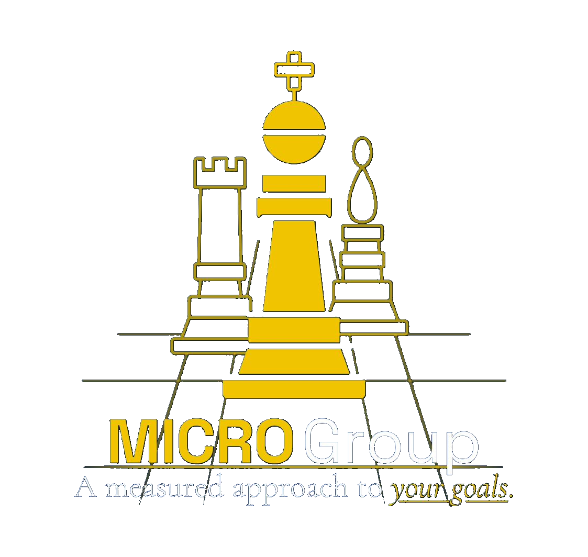

Strategic & research-driven consultingA measured approach to your goals.
A multi-service consultancy dedicated to serving nonprofit, education, and government institutions through expertise in Management, Integration, Culture, Research, and Operations.
What Guides Us +
Mission
To provide strategic, research-driven consultative solutions.
Vision
To become a trusted partner in guiding institutions toward excellence and sustainability.
Values
A client-centric institution committed to integrity, innovation, and collaboration.
Approach
We tailor our work to the unique needs and goals of your organization.
Core Subjects & Expertise +
MManagement
Strategic management and planning, executive leadership development, organizational strategy, and interim director services.
IIntegration
Programmatic and organizational integration, software implementation, and organization-wide training.
CCulture
Culture development, team building, and employee engagement that strengthen collaboration and cohesion.
RResearch
Employee pay analysis, market analyses, and policy impact studies for evidence-based decisions.
OOperations
Operational management that increases productivity, optimizes resources, and enhances effectiveness.